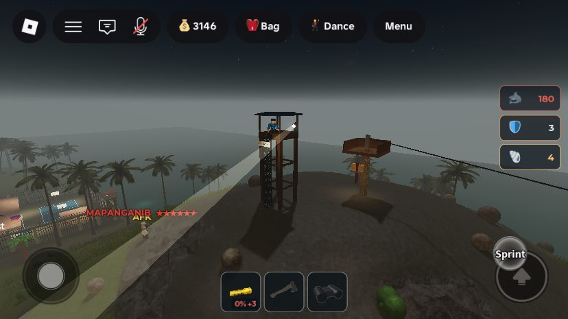
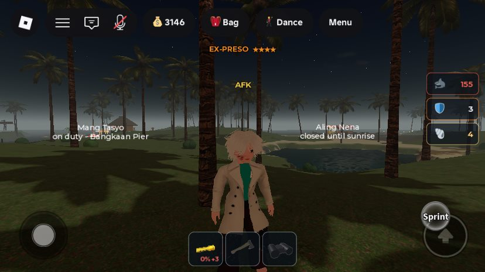
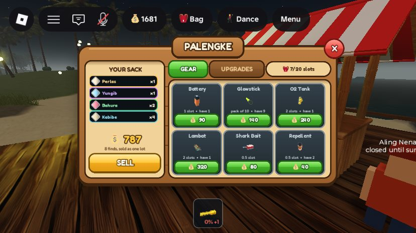
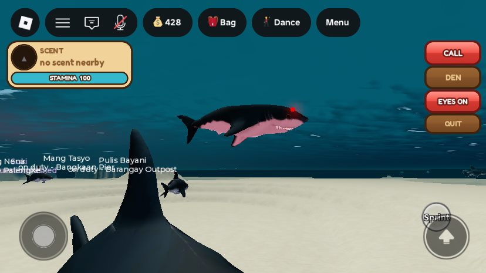
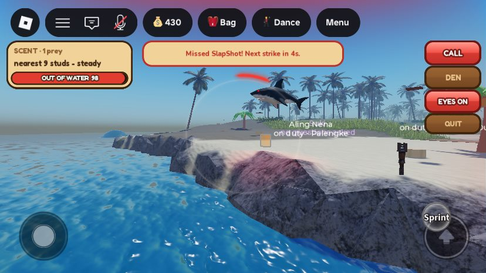
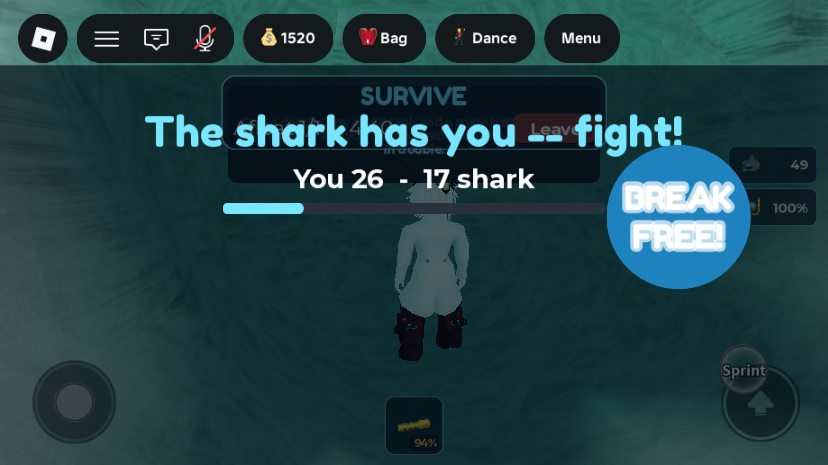
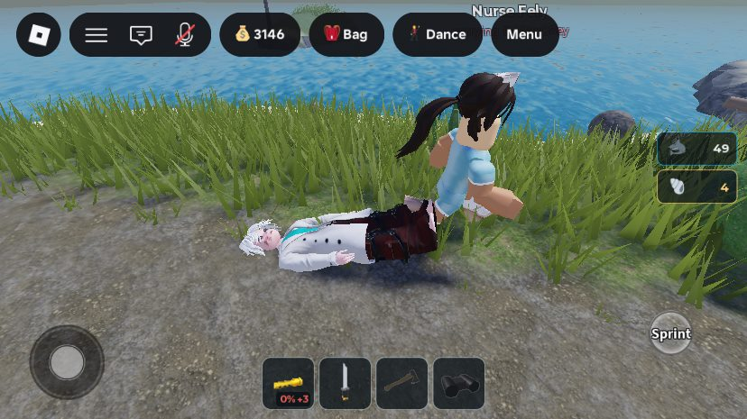
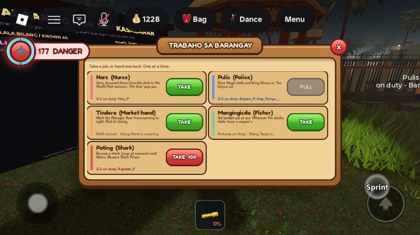

🫁 Three Lung Corals
Hidden in the maze. Carry one home alive, cure it for an island day in the banga beside your bodega, and it adds 15 seconds to every breath for good. Drown on the way up and it's gone.
🌴 A Filipino island on Roblox
Dive for pearls. Dodge the sharks. Or become one. Work the reef and a flooded cave maze, swim your haul home alive, and sell it at the palengke. Scroll to descend.
Ibabaw · the surface
Stilt houses over the water, bangka at the pier, and a ridge with a zipline and a watchtower. Everything you gather under the sea rides in your sack until you sell it. Run out of air on the way back and the whole haul scatters on the seabed for anyone to pick up. The Peso already in your pocket is safe.
Zone 01
Sunlit seabed a short swim from the piers, scattered with kabibe, sigay and talaba. This is where you learn the air bar: 45 seconds a breath, refilled fast at the surface.
Zone 02
Coral, urchins and tahong further out, and the first real money. It's shark water too: they patrol the whole sea, more of them after dark. When one lunges, time the parry to fend it off, or lose air and go flying. Fishers stake lambat nets out here, and every shark that swims through one shakes loose a find for anyone to grab.
Zone 03
A flooded maze under the island. Air pockets let you breathe on the way in, and three hidden Lung Corals each add 15 seconds to every breath for good, taking you from 45 to 90, once you carry them home and let them cure. Air is earned down here. It is never for sale.
Zone 04
The deep half of the cave. Perlas ng Kailaliman pay 200 each, the rotating Kristal pays 280, and the hoards at the end of airless dead-end crawls pay 230 a piece. Getting in is easy. Getting back out with enough air is the game.
Down here somewhere
Hidden in the maze. Carry one home alive, cure it for an island day in the banga beside your bodega, and it adds 15 seconds to every breath for good. Drown on the way up and it's gone.
Dead-end passages collapse all day long, so yesterday's map lies. You get four seconds of rumble first, and if you're shut in you can dig your way out.
Any diver can rewrite the sign at a fork. An honest one points to air; a dishonest one points to a dead end. Every slate carries its author's name.
Every 20 to 35 minutes a charm of power surfaces deep in the cave. Everyone gets a riddle and a rough area, then six minutes to grab it: shark immunity, breath that doesn't drain, a 1,500 Peso pearl and more.
A stone marker at the mouth of each long tunnel says how much air the round trip needs, green if your lungs can make it and red if they can't.
Visit a quarter, half, three quarters and all of the chambers to earn the titles Bagong Maninisid up to Scuba Diving Professional, shown over your head.
New · the Pating job
Pay 100 Peso at the job board and you spawn in the Pating Den, a glowing dome on the seabed. Up to three players per server can hunt as sharks. You can't see finds, lights or signs in the cave, and you earn nothing there. You hunt by scent.
The jump button launches you out of the water. Tap a player on a beach, dock or boat and you leap past them for a 49% chance to slap them into the sea.
Sprint to dash on one stamina bar, or call nearby shark players and up to six of the island's own sharks to your side.
Shark Bait shows gold on your scent ring from 400 studs. Eat it and you're GALIT for 20 seconds: 1.5× speed and dash, and eyes that burn red.
Glowing eyes let you see in the dark, and everyone else can see them too. Switch them off to sneak.
Land a leap on a swimmer and they lose air. Run someone dry and they drown, and their sack spills for the taking.
The divers' answer, 250 Peso at the palengke. Strike someone holding it and you die, turn human again and wake up at the Health Post.
Minigame · 3 to 10 players
Trabaho sa Barangay
A job is a shift on this server, bought with a barangay clearance of 60 to 120 Peso. Your first one is free. Each job carries only its own gear, and no job at all makes you a Tambay: the one who carries the axe and the tolda.
Drowned divers wait on the Pantalan dock. Drag them by the ankles to the Health Post scanner and the patient's bill, 15% of their wallet, is yours.
Seize illegal stalls, tase and cuff thieves, and keep a cut of what you confiscate.
The only one who restocks the palengke crates, from morning to night. Up to 450 Peso at closing.
Stake a lambat at sea. Sharks crossing it shake loose finds anyone can grab.
The cave diver, and the only job that carries oxygen tanks. Cave finds sell for 10% more.
Become the shark. You stay a shark until you quit or someone poisons you.
Out of air? A drowning costs 15% of your wallet. You're laid on the dock until someone drags you in, and if nobody comes, after 50 seconds you can pass three quick checks and wake up on your own.
After dark
The palengke is the only legal market. Every other deal is a crime, and the barangay pulis know it.
Pitch an illegal stall anywhere and sell your finds straight for Peso at your own price. Packing it up takes twelve loud seconds.
Keep your haul in a chest you place yourself: Kahon, Bato, Bakal or Ginto, each tougher and roomier. A Tambay with an axe can chop one open, and anyone caught doing it is Wanted.
Two officers lurk behind the palms. Carry an axe where they can see it and you get three warnings. Notice one staring at you and it stares back.
The watchtower on Tanaw Ridge sweeps a spotlight over the island and tells every pulis where a Wanted player is standing.
10 minutes, then 15, then 20, behind barred walls everyone outside can see through. Work it off at the duty desk.
Every jailing adds a star over your head. Six reads MAPANGANIB, and more stars send more police, running faster.


The island keeps time
New here? Open GABAY from the menu: nine guided tracks with a gold trail on the ground, each paying Peso once. Then four tasks a day, 30 to 80 Peso each, and a login streak that climbs from 10 to 50 Peso.
Every Saturday, Philippine time, everything you earn pays 1.5× and the plaza lights come on. Each month brings its own festival bonus on top, from Sinulog in January to Pasko sa Barangay in December.
A full island day takes 24 real minutes. After dark more sharks come out, and the watchtower's light is easier to see and harder to escape.
Dance on the Sayawan stage, dig for treasure on Baybayon Beach, send Peso to friends, and pose at the Isla Ningning photo spots.
Back at the surface
Passes sell looks, time and bragging rights. Air, safety and the cave are never for sale.
1.5× Peso on everything you earn, one free job clearance every day, a gold nametag, free zipline rides and the VIP bangka.
Get VIPA gold nameplate and the Island Legend title. Pure prestige.
Become a legendRide the bangkero ferry to the private offshore isle.
Unlock the ferryEvery zipline leg across Tanaw Ridge free, forever. Everyone else pays 25 Peso a leg.
Get zipline passPlace a second bodega anywhere on the island.
Add a bodegaThe riveted steel chest for free: 350 health and 120 slots, where the free Kahon has 100 and 30.
Build in steel
Straight from the island






Surfaced. Sun's still up.
Free to play. No download. Bring friends: somebody has to be the shark.
▶ Play Isla Marahuyo